На сайте содержится информация о никотиносодержащих продуктах.
Сайт использует файлы cookies. Если согласны, продолжайте пользоваться сайтом. Более подробно об этом можно узнать в Политике Cookies.
0 800 502 111 (Дзвінки безкоштовні, тільки для повнолітніх)
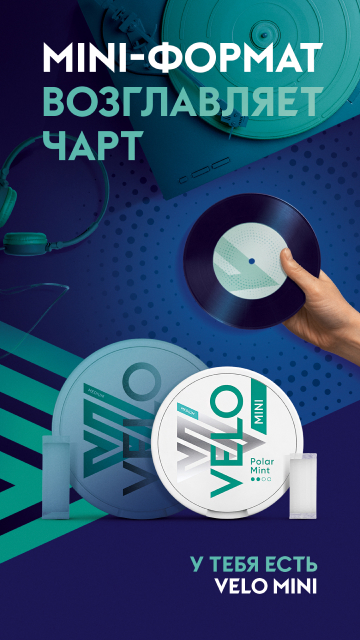
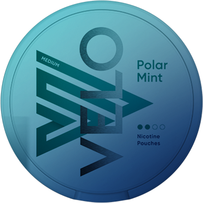
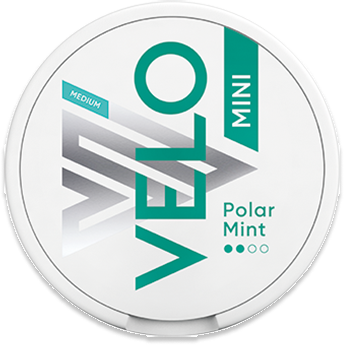
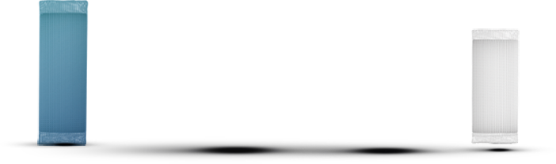
MINI-формат возглавляет чарт
У ТЕБЯ есть Velo MINI
Встречай VELO Mini!
Теперь любимые вкусы VELO Polar Mint и VELO Berry Frost в новом ФОРМАТЕ MINI.
Паучи и банка становятся меньше. Вкус и крепость остаются неизменными.
Тот же любимый VELO, но в более компактном формате.
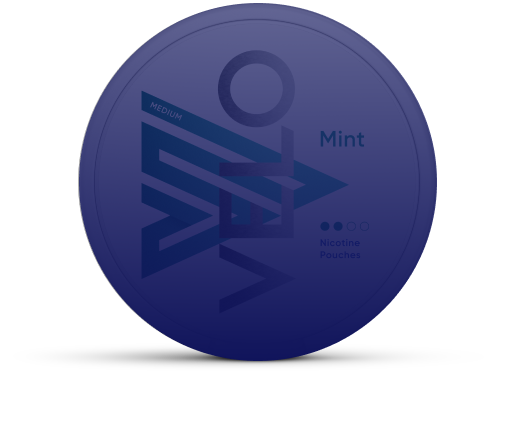
VELO Polar Mint
MEDIUM MINI
Сладкая мята
Крепость: 6 мг*
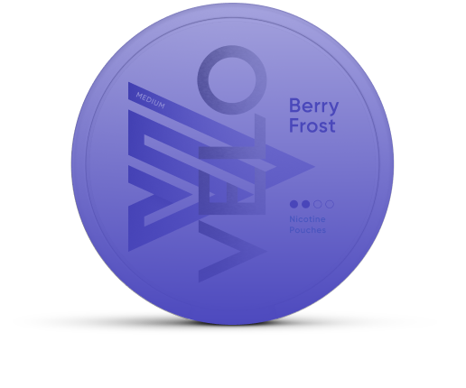
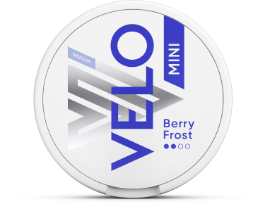
VELO Berry Frost
MEDIUM MINI
Освежающая ягода
Крепость: 6 мг*
Преимущества VELO Mini
1
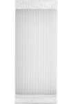
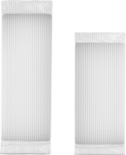
MINI-формат – максимум комфорта
Паучи становятся более компактными, а значит почти не ощущаются под губой
2
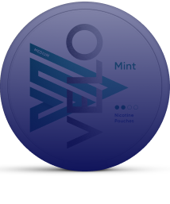
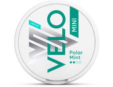
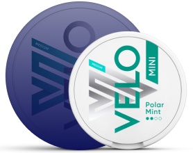
Размер имеет значение
VELO Mini – это не только самые маленькие паучи, но и компактная банка, которую всегда удобно держать при себе – в кармане, маленькой сумке или даже в руке – куда бы ты не отправился. VELO MINI – удобно, где угодно, когда угодно.
3
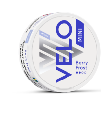
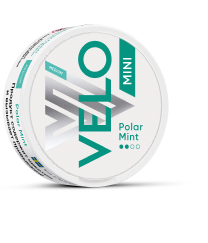
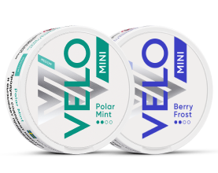
Подходит для первого знакомства с VELO
Если ты VELO-новичок – начинай знакомство c паучей в формате Mini в крепости Medium.
Mini пауч почти не ощущается под губой, а средняя крепость идеально подходит для старта.
Паучи MINI почти не ощущаются под губой, а крепость Medium идеально подходит для старта
Что внутри velo?
velo Использовать просто
1
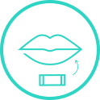
Расположите 1 пауч (подушечку) под верхней губой
2
Покалывание означает, что никотин начал действовать
3
Используйте до 30 минут
4
Поместите использованный пауч в специальный контейнер в банке
Откройте вкусы velo и узнайте, какой подходит вам:
Линейка Medium с крепостью 6 мг в одном пауче** —
минимальное содержание никотина среди всей продукции VELO в Беларуси.
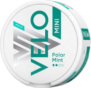
VELO polar mint medium
6 мг в одному пауче**
Сладкая мята с нотками эвкалипта
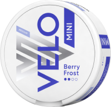
СКОРО
VELO berry frost medium
6 мг в одному пауче**
Яркий вкус летних ягод
VELO – ЭТО ИННОВАЦИОННЫЙ СПОСОБ ПОТРЕБЛЕНИЯ НИКОТИНА БЕЗ СИГАРЕТ.
VELO СОДЕРЖИТ НА 99% МЕНЬШЕ ТОКСИЧНЫХ ВЕЩЕСТВ, ЧЕМ СИГАРЕТА**
Рекомендован тем, кто уже знаком с velo
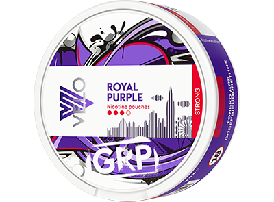
VELO royal purple strong
10 мг в одному пауче*
Cочный виноград
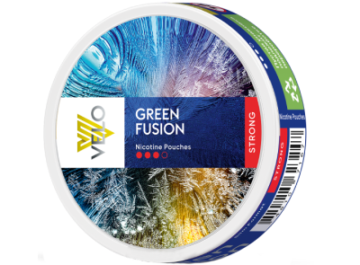
VELO GREEN FUSION STRONG
10 мг в одному пауче*
Зимние специи
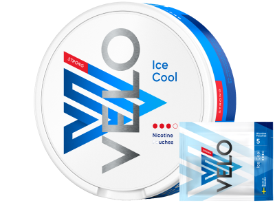
VELO ice cool strong
10 мг в одному пауче*
Ледяная мята
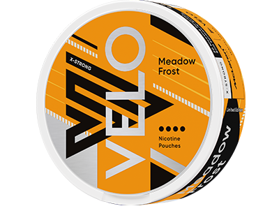
VELO MEADOW FROST X-STRONG
10,9 мг в одном пауче*
Освежающая ягода с травяными нотками
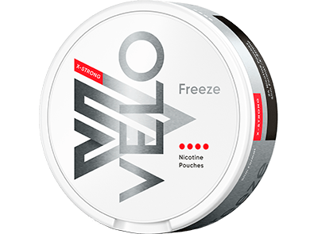
VELO freeze x-strong
10,9 мг в одному пауче*
Морозная мята
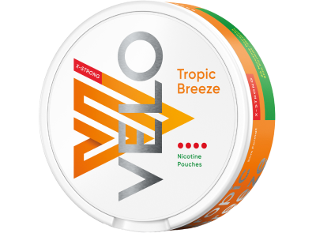
velo Tropic Breeze X-Strong
10,9 мг в одному пауче*
Cочный вкус тропических фруктов
Подходит для опытных пользователей
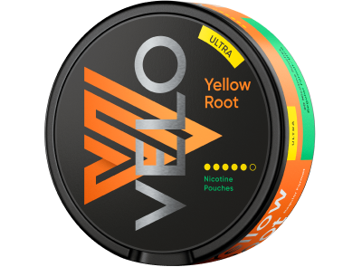
VELO yellow root ultra
15 мг в одному пауче**
Пряный имбирь
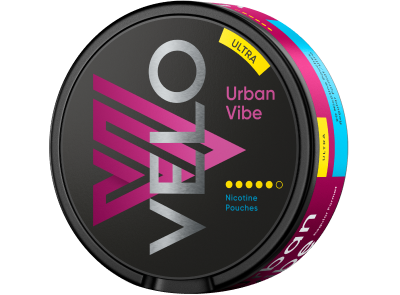
VELO urban vibe ULTRA
15 мг в одному пауче**
Фруктово-ягодный взрыв
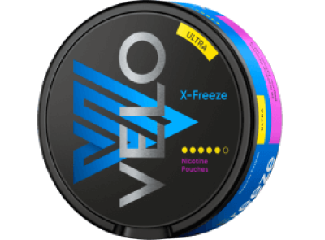
VELO x-freeze ULTRA
15 мг в одном пауче**
Перечная мята
В формате саше
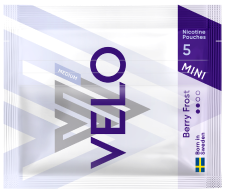
VELO BERRY FROST MEDIUM MINI
6 мг в одному пауче*
Освежающая ягода
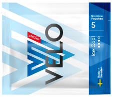
VELO BERRY FROST MEDIUM
6 мг в одному пауче*
Освежающая ягода
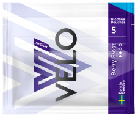
VELO ICE COOL STRONG
6 мг в одному пауче*
Ледяная мята
* Уровень никотина определяется методом газовой хроматографии. Данный метод основан на международной методике CORESTA 62. Допустимо возможное отклонение уровня содержания никотина в одном пауче на +/-15%.
** Этот продукт не исключает риски, содержит никотин, вызывающий привыкание. Сравнение основано на оценке веществ в дыме стандартной эталонной сигареты (с содержанием смолы приблизительно 9 мг) и компонентов, выделяемых во время использования пауча VELO, а именно средних значений 9 основных токсичных веществ, которые Всемирная организация здравоохранения рекомендует сократить в сигаретном дыме.